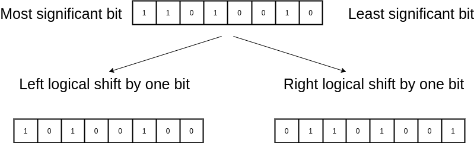
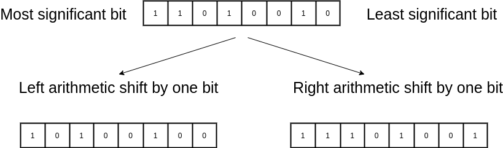

Posted by liz
12 November 2022
Bit Shifting
If you encountered shifts in theorical books, C/C++ or maybe even assembly instructions and didn't perfectly understand them, I've tried my best here!
Simply we have 2 shifting methods, one of them being logical and the other one being arithmetic, we can apply these methods by a direction, either left or right.
Logical Shift
Left Logical Shift
Left logical shift simply moves everything to to left by a bit. As an example: Shifting the binary value 0100, which is 4 bits long, to the left by one bit would result in 1000, where the least significant bit is filled by 0, and shifting just one more bit will result in 0000 Left logical shift can be used to multiply binary values. An example of this would be like this: shifting 0101 to the left by one bit, which is equal to decimal 5, will result in 1010, which is equal to 10 in decimal.
Right Logical Shift
This operation moves everyting to the right by one bit, as opposed to left logical shift. Shifting the value 1101 to the right by one bit, will result in, 0110 where the most significant bit filled by 0.

Example
In most programming languages right logical shift is defined as >> whereas left logical shift is defined as <<. Lets see a real life example in C++, imagine we have a system where instructions are two bytes long and stored in the memory. And as an example instuction we have abxy, an operation that is one byte and denoted by ab. This instruction simply takes x and y and saves their sum to the first register.
...
opcode = memory[pc] + memory[pc + 1];
switch(opcode & 0xFF00){
case 0xab00:
x = (opcode & 0x00F0) >> 4;
y = (opcode & 0x000F);
r1 = x + y;
}
...
To get the first operand(x) we simply apply bitwise and operation, this will result every bit except the ones carrying the value of x to be 0. After that we shift the new value to the right by 4 bits to get the actual value. And to get do second operand we can get away simply by applying logical and.
Arithmetic Shift
Left Arithmetic Shift
This is completely identical to the left logical shift.
Right Arithmetic Shift
Similarly to right logical shift, we still shift everything to right by one bit but instead of filling the most significant bit with 0, we put the current value of it. Also right arithmetic shift can be used to divide values by 2, shifting right to the by one bit 0100, decimal 4, will result in 0010, which is equal to decimal 2. (If the number is presented by two's complement, this will preserve the sign.)
